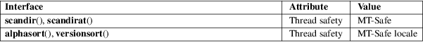

scandir, scandirat, alphasort, versionsort − scan a directory for matching entries
Standard C library (libc, −lc)
#include <dirent.h>
int
scandir(const char *restrict dirp,
struct dirent ***restrict namelist,
int (*filter)(const struct dirent *),
int (*compar)(const struct dirent **,
const struct dirent **));
int
alphasort(const struct dirent **a, const
struct dirent **b);
int versionsort(const struct dirent **a, const
struct dirent **b);
#include
<fcntl.h> /* Definition of AT_* constants */
#include <dirent.h>
int
scandirat(int dirfd, const char *restrict
dirp,
struct dirent ***restrict namelist,
int (*filter)(const struct dirent *),
int (*compar)(const struct dirent **,
const struct dirent **));
Feature Test Macro Requirements for glibc (see feature_test_macros(7)):
scandir(),
alphasort():
/* Since glibc 2.10: */ _POSIX_C_SOURCE >= 200809L
|| /* glibc <= 2.19: */ _BSD_SOURCE || _SVID_SOURCE
versionsort():
_GNU_SOURCE
scandirat():
_GNU_SOURCE
The scandir() function scans the directory dirp, calling filter() on each directory entry. Entries for which filter() returns nonzero are stored in strings allocated via malloc(3), sorted using qsort(3) with the comparison function compar(), and collected in array namelist which is allocated via malloc(3). If filter is NULL, all entries are selected.
The alphasort() and versionsort() functions can be used as the comparison function compar(). The former sorts directory entries using strcoll(3), the latter using strverscmp(3) on the strings (*a)−>d_name and (*b)−>d_name.
scandirat()
The scandirat() function operates in exactly the same
way as scandir(), except for the differences
described here.
If the pathname given in dirp is relative, then it is interpreted relative to the directory referred to by the file descriptor dirfd (rather than relative to the current working directory of the calling process, as is done by scandir() for a relative pathname).
If dirp is relative and dirfd is the special value AT_FDCWD, then dirp is interpreted relative to the current working directory of the calling process (like scandir()).
If dirp is absolute, then dirfd is ignored.
See openat(2) for an explanation of the need for scandirat().
The scandir() function returns the number of directory entries selected. On error, −1 is returned, with errno set to indicate the error.
The alphasort() and versionsort() functions return an integer less than, equal to, or greater than zero if the first argument is considered to be respectively less than, equal to, or greater than the second.
|
EBADF |
(scandirat()) dirp is relative but dirfd is neither AT_FDCWD nor a valid file descriptor. | ||
|
ENOENT |
The path in dirp does not exist. | ||
|
ENOMEM |
Insufficient memory to complete the operation. |
ENOTDIR
The path in dirp is not a directory.
ENOTDIR
(scandirat()) dirp is a relative pathname and dirfd is a file descriptor referring to a file other than a directory.
For an explanation of the terms used in this section, see attributes(7).

alphasort()
scandir()
POSIX.1-2008.
versionsort()
scandirat()
GNU.
alphasort()
scandir()
4.3BSD, POSIX.1-2008.
versionsort()
glibc 2.1.
scandirat()
glibc 2.15.
Since glibc 2.1, alphasort() calls strcoll(3); earlier it used strcmp(3).
Before glibc 2.10, the two arguments of alphasort() and versionsort() were typed as const void *. When alphasort() was standardized in POSIX.1-2008, the argument type was specified as the type-safe const struct dirent **, and glibc 2.10 changed the definition of alphasort() (and the nonstandard versionsort()) to match the standard.
The program below prints a list of the files in the current directory in reverse order.
Program
source
#define _DEFAULT_SOURCE
#include <dirent.h>
#include <stdio.h>
#include <stdlib.h>
int
main(void)
{
struct dirent **namelist;
int n;
n =
scandir(".", &namelist, NULL, alphasort);
if (n == −1) {
perror("scandir");
exit(EXIT_FAILURE);
}
while
(n−−) {
printf("%s\n", namelist[n]−>d_name);
free(namelist[n]);
}
free(namelist);
exit(EXIT_SUCCESS);
}
closedir(3), fnmatch(3), opendir(3), readdir(3), rewinddir(3), seekdir(3), strcmp(3), strcoll(3), strverscmp(3), telldir(3)